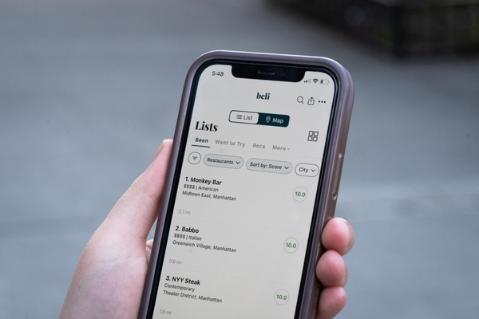

For my final project, one of the ideas I have is to create a clean, simple, and intuitive budget tracker.
My goal is to design a tool that makes it easy for users to input their expenses and see where their money is going.
I want the interface to feel minimal but still visually engaging.
One of the ideas I'm exploring is incorporating charts or visual elements uch as bar graphs, pie charts, or line charts that track spending over time.
I already have a few design concepts in mind and will continue refining the layout, colors, and user flow to make the tracker both functional and enjoyable to use.

For my other final project idea, I'm considering building a food rating app that focuses on clarity, ease of use, and a smooth overall experience.
My inspiration for this idea is Beli. I'm aiming for a layout that feels modern and uncluttered, but still fun to interact with.
I'm also thinking about adding visual features like simple charts or highlight sections that show a user's favorite foods they tend to enjoy.